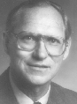

|
 |
ACM Fellow Profile
boehm@sunset.usc.edu |
 |
What did you do to become an ACM fellow?
A lot had to do with quantitative approaches to software. A great deal had to do with the COCOMO model for software cost and schedule estimation, and enabling various tradeoffs and decision analyses about software. We really had to understand what process was being estimated, and try to define that process carefully. We started doing a lot in process models. This led to the Spiral model, which is one of the primary models used to develop software today. To be simple: COCOMO and the Spiral model.
What are the best references to your work?
For COCOMO: Barry Boehm, Software Engineering Economics, Prentice Hall, 1981.
For the Spiral model: Barry Boehm, "A Spiral Model of Software Development and Enhancement", IEEE Computer, Vol.21, No. 5, May 1988, pp 61-72.
What are your current research interests?
Value-based Software Engineering (SE). Basing SE decisions on cost, benefit, and risk considerations. Software Engineers (SEs) spend much of their time on unimportant things, because most of their Computer Science (CS) and SE processes, methods, tools, and metrics are value-neutral. Every requirement, use case, object, test case, and defect is equally important. With value-based SE, we are trying to develop definitions of processes, methods, tools, and metrics that reflect relative value. Every requirement ought to have a priority: critical, required, nice to have, . . . . When they test, they ought to test the most important things first, the most critical failures.
I got into this by working in industry, because there was a concern about spending company money or government money, and they wanted to get good return on investment. COCOMO enabled us to estimate cost. But it was not able to estimate benefit.
As an explicit focus, I have been working on this for five years. Specific results are in projects that we worked on at USC. We teach SE as a project course, where students get into teams of five or six people and build real applications for real service providers. And, these have to be defined and architected in 12 weeks in the fall, and have to be developed and installed in 12 weeks in the spring. To succeed at this, we have to get clients to prioritize their requirements. And teams have to build the top requirements first, and architect the systems to drop borderline features if they run out of time. So, over the last seven years, we have delivered client-satisfactory products, on schedule 91% of the time. Which is a lot better than what you read in the Standish report of 16% to 26% of the time.
What are your current outside interests?
Tennis, surfing, guitar, reading, traveling. I play one competitive tennis tournament a year, but mostly as a hobby. I have always surfed. I was born in Santa Monica and I still live there and I have gone to the beaches as long as I can remember. I play folk music on a classical guitar. Melodies. It is a relaxing thing to do. Reading and travel are connected. When my wife and I travel, we like to read histories and novels that give us context about where we're going.
What was the greatest influence on you?
The 14 years I spent at the Rand Corporation. It was populated with world-class people. It had a culture of excellence and leadership and long-range focus. It is also where I got interested in economics. I basically learned economics on the job at Rand.
A good example would be Richard Bellman, who invented dynamic programming, and was a really good tennis player, and was stimulating in almost all dimensions of life.
I studied economics because it was the fundamental thing that underlaid the way Rand did system analysis and policy analysis. They were doing analysis that affected national policy. I was impressed with the way that these tools enabled people to assess the consequences of different decisions. And relate them to the values that people found important.
Previously, I worked at General Dynamics as a programmer. They felt that if you wrote the code you were asked and turned your mind off at 5, that was all that was expected. At Rand, they wanted you to take the lead on things and strive for excellence. There were all these role models like Richard Bellman and CS pioneers in AI (Allen Newell), and graphics (Tom Ellis), and modeling (Harry Markowitz), and the like.
What was your greatest influence on others?
COCOMO and the Spiral model.
Who has made the most impact on SE in general?
Fred Brooks. If anybody could be called the great communicator it is Fred. He was able to extract from his experience on OS/360 and other projects, and relate it to other people, on a lot of SE issues, in a way they could understand.
What is your favorite story about software engineering?
This is a story that I heard second-hand at TRW, but it may be an urban myth. It is about a weights engineer on a spacecraft. He accounts for all of the weight on a spacecraft. The weights engineer came to a software engineer and said, according to budget, there is $3,000,000 accounted for the software and I want to know how much it weighs. The software engineer replied, nothing. The weights engineer said he wanted that kind of a job. You get paid well to produce something that weighs nothing.
A week later, the weights engineer came back with a deck of cards. Is there any software in here? he asked. The software engineer said yes. The weights engineer said he would weigh the deck to determine the weight of the software. The software engineer said, you have it all wrong; we only use the holes.
I have told this story dozens of times. It illustrates a lot of things. Software is invisible. To visualize it, you build models that help you reason about the effects of software decisions that you need to make.
Which areas are most in need of investment by government, business, or education?
Investing in SE and computing techniques for systems of the future. As examples, systems of the future will evolve a lot more rapidly than in the past. A lot of current research assumes that software will not change very much. What we found in the seven years that we have been doing team projects, is that they have gone from 28% COTS intensive to 70% COTS intensive. Seven years ago, teams would build their own search engines and web crawlers. Now they download them as components. But again, most research is focused on building custom software.
Other areas are rapid change, COTS, groups of people versus individuals doing things sitting at workstations, systems of systems, static systems becoming mobile and wireless. Other trends don't get much (proportional) investment.
What advice do you have for computer science and software engineering students?
Focus on learning things that will have the most future value. I would quote Wayne Gretzky. "I have found it most effective to skate to where the puck is going, rather that where it is or where it was." The students will practice until 2045, so they ought to learn emerging techniques rather than 1970s techniques. I try to do this for all my students. We teach emerging technologies, such as agile methods, COTS, collaboration, next-generation process models, rapid change, and getting experience with groupware for collaboration. We also try to help students learn how to learn, by giving them assignments to make assessments of such emerging technologies.
What is the most overlooked risk in software engineering?
Off-nominal requirements. When most people write a requirement or story, they talk about how it should work in the nominal situation. They postpone thinking about what will happen if inputs are wrong or a disk crashes, or other off-nominal situations: null file, divide by zero.
We have two phases for writing requirements. In the first round you write the nominal requirements. In the second round, you write the most critical off-nominal requirements and the evolution requirements. And then you do a feasibility rationale that shows your architecture can handle the off-nominal requirements and the evolution requirements.
What is the most repeated mistake in software engineering?
Lack of expectation management. Most SE people prefer to avoid confrontation, and if the managers or marketers say "I need this next month" and they feel it will take two months, they are reluctant to confront the manager or marketer with this reality. This accounts for the 16% to 26% success rates for delivering things on schedule.
One thing that helps is cost and schedule estimation models which are calibrated to real experience. If they provide objective evidence that the amount of software will take twice the desired schedule, people should push back. I will cite our 91% on-schedule success rate as evidence that this is feasible.
In our project classes, we actually have sessions with the clients, where we explain that asking for too much is asking for trouble.
What are the most exciting software engineering ideas or techniques on the horizon?
One is group-oriented collaboration tools. They get you involved in collaboration in a constructive, mutual-learning context. We had a tool (win-win) for developers and clients to negotiate what features can be built in 24 weeks (to negotiate a win-win outcome). We built a version of this ourselves. But our model was for people to sit at their own workstations and enter desired requirements. Later we used a collaboration framework done by GroupSystems.com (easy win-win). When you entered a desired requirement on a workstation, the next thing you saw on your screen was a set of requirements that had been entered by the other stakeholders. This causes you to think about what other people were asking for, rather than stay preoccupied by your own requirements.
Others: A prioritization capability, where the users and customers rate (on a scale of 1 to 10) the business importance of a requirement. The developers rate (on a scale of 1 to 10) the ease of developing a requirement. The tool can then display which requirements are most important and easy to do. It can also tell you the degree of consensus about the importance and difficulty of the features, which stimulates further discussion about the nature of these differences and accelerates mutual understanding.
What are your plans for the future?
To push value-based SE as much as I can. Again, this includes all of the other people at our center for software engineering: professors, students, teachers, researchers, and staff.
I guess the one future event that I am looking forward to the most is that I have been invited to visit a number of places in China, by the Chinese Academy of Sciences, as a Visiting Professor. This will be in May of 2005. This will be my first visit to China.
Any additional comments?
Becoming a Fellow is a product of a lot of other people's contributions: the people here at the center, role models like Fred Brooks and Richard Bellman, and other leaders in the field.
Our center has the world's largest affiliates program in SE. We have 34 companies and government agencies (DOD, FAA, NASA) that participate in workshops, provide us data, and provide us annual affiliates grants that helps us do research. We get a tremendous stimulation and feel for what is emerging on the horizon from the affiliates.
Profiled by Michael Wing, July 2004